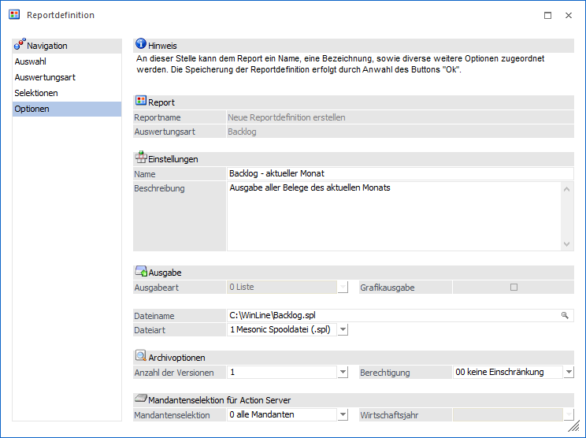
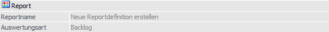
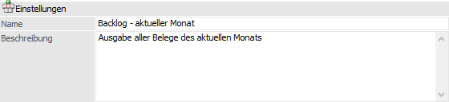
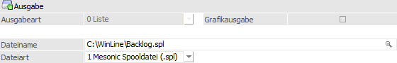
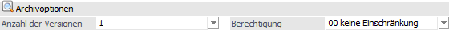
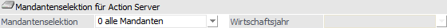

Im vierten und letzten Bereich der Reportdefinition können weitere Optionen für den Report hinterlegt werden und die abschließende Speicherung erfolgen.

Folgende Einstellungen und Informationen stehen in diesem Bereich zur Verfügung:
Report

Ø Reportname
An dieser Stelle wird der Name des ausgewählten Reports angezeigt. Handelt es sich um eine Neuanlage einer Reportdefinition, so wird der Name "Neue Reportdefinition erstellen" ausgegeben.
Ø Auswertungsart
Hier wird die Art der Auswertung des (ggfs. neuen) Reports dargestellt, d.h. ob es sich um eine Applikationsauswertung (z.B. Backlog), eine Listauswertung, eine MesoCalc-Ausgabe, den Datencheck oder einen Hintergrundprozess handelt.
Einstellungen

Ø Name
Vergabe eines Namens für die Reportdefinition.
Ø Beschreibung
Zusätzlich zum Namen kann auch eine Beschreibung zur Reportdefinition hinterlegt werden.
Ausgabe

Ø Ausgabeart
An dieser Stelle wird definiert, in welcher Art der Report ins WinLine ARCHIV ausgegeben werden soll, wobei die Möglichkeiten abhängig von der Auswertungsart sind. Folgende Varianten stehen zur Verfügung:
ü 0 - Liste
Es wird eine Liste
(d.h. ein Druck) erzeugt, welcher in das Archiv abgelegt wird. Diese Ausgabeart
steht immer zur Verfügung.
Hinweis
Wird die Ausgabeart "0 - Liste" für die Auswertungsart "MesoCalc" gewählt, so wird die "MesoCalc"-Tabelle als Mesonic-Spooldatei ausgegeben.
Achtung
Bei der Auswertungsart "Listassistent" stammen die Daten immer aus der im Vorfeld ausgewählten Datenquelle! D.h. sind aktuelle Daten gewünscht, so muss die Datenquelle zuvor aktualisiert werden (z.B. über einen weiteren Report mit Ausgabeart "2 - Datenquelle (privat)" oder "3 - Datenquelle (öffentlich)").
ü 1 - Tabelle
Es wird eine
Ausgabe in Form einer Tabellenkalkulation (MCS-Datei) erstellt und ins Archiv
abgelegt. Diese Ausgabeart steht für die Auswertungsarten "Listenassistent",
"Bilanz" und "MesoCalc" zur Verfügung.
Achtung
Bei der Auswertungsart "Listassistent" stammen die Daten immer aus der im Vorfeld ausgewählten Datenquelle! D.h. sind aktuelle Daten gewünscht, so muss die Datenquelle zuvor aktualisiert werden (z.B. über einen weiteren Report mit Ausgabeart "2 - Datenquelle (privat)" oder "3 - Datenquelle (öffentlich)").
ü 2 - Datenquelle (privat)
Es
wird eine private Datenquellen für den jeweiligen Benutzer erzeugt. Der Inhalt
der Datenquellen kann u.a. im Programm "Datenquellenverwaltung" in Form eines
Power Reports analysiert werden. Diese Ausgabeart steht für die Auswertungsarten
"Listassistenten" und "Hintergrundprozess" (wenn die Basisauswertung über eine
Power Report-Ausgabe verfügt) zur Verfügung.
ü 3 - Datenquelle (öffentlich)
Es
wird eine öffentliche Datenquellen für alle Benutzer erzeugt. Der Inhalt der
Datenquellen kann u.a. im Programm "Datenquellenverwaltung" in Form eines Power
Reports analysiert werden. Diese Ausgabeart steht für die Auswertungsarten
"Listassistenten" und "Hintergrundprozess" (wenn die Basisauswertung über eine
Power Report-Ausgabe verfügt) zur Verfügung.
Achtung
Diese Ausgabeart steht nur Benutzern des Typs "Administrator" oder mit der Administratorenberechtigung "Datenadministrator" zur Verfügung.
Ø Grafikausgabe
Diese Option steht nur zur Verfügung, wenn für einen Reporttyp "MesoCalc" die Ausgabeart "Liste" gewählt wurde. Wird die Grafikausgabe dann aktiviert, so wird der im MesoCalc-Sheet definierte Datenbereich als Grafik im Spoolfile dargestellt.
Ø Dateiname
In diesem Eingabefeld kann ein Verzeichnis, sowie ein Dateiname angegeben werden, wodurch beim Erzeugen des Reports die Auswertung - zusätzlich zum Speichern im Archiv (siehe Eingabefeld "Ausgabeart") - auch im angegebenen Verzeichnis gespeichert wird.
Ø Dateiart
Aus der Auswahlliste kann gewählt werden, in welchem Format die Reportdatei gespeichert werden soll.
Dabei wird der im Feld "Dateiname" angegebene Dateiname geprüft, unter dem die Auswertung gespeichert werden soll, ob es sich dabei um ein Dateiformat handelt, welches beim Export unterstützt wird.
Bei den Auswertungsarten "Listenassistent", "MesoCalc" und "Bilanz" sind die unterstützten Formate Spoolfiles (.spl), Kalkulationsblätter (.mcs) und Exceldateien (.xls); bei allen anderen Auswertungen nur Spoolfiles (.spl).
Hinweis 1
Wenn beim Dateinamen eine "nicht erlaubte" Endung angegeben wird, erfolgt eine entsprechende Warnung.
Hinweis 2
Wird die Dateiart in der Auswahlliste geändert, so wird die aktuelle Endung des Dateinamens automatisch angepasst.
Achtung
Bei der Auswertungsart "Listassistent" stammen die Daten immer aus der im Vorfeld ausgewählten Datenquelle! D.h. sind aktuelle Daten gewünscht, so muss die Datenquelle zuvor aktualisiert werden (z.B. über einen weiteren Report mit Ausgabeart "2 - Datenquelle (privat)" oder "3 - Datenquelle (öffentlich)").
Archivoptionen

Ø Anzahl der Versionen
Unter Anzahl der Versionen kann von 1 bis 3 gewählt werden. Damit kann die Anzahl jener Versionen gesteuert werden, die im Archiv gespeichert werden.
Ø Berechtigung
Mittels Berechtigungsprofil, welches hier angegeben werden kann, kann definiert werden, dass nur Benutzer mit bestimmten Berechtigungen den erzeugten Report aufrufen dürfen (nähere Informationen entnehmen Sie bitte dem WinLine ADMIN - Handbuch).
Hinweis
Benutzern des Typs "Administrator" oder mit der Administratorenberechtigung "Benutzeradministrator" steht in der Auswahlbox der Punkt ">> Neues Profil" zur Verfügung. Über die Anwahl dieses Eintrags kann in der Folge ein neues Berechtigungsprofil angelegt werden.
Mandantenselektion für Action Server

Ø Mandantenselektion / Wirtschaftsjahr
Mit den Optionen "Mandantenselektion" und "Wirtschaftsjahr" kann bestimmt werden, für welche Mandanten bzw. Wirtschaftsjahre der Report gültig ist, d.h. in Menüpunkt "Action Server - Definition" eingetragen werden kann.